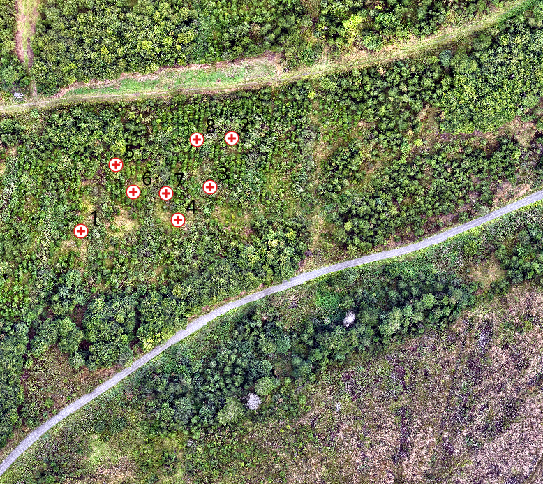
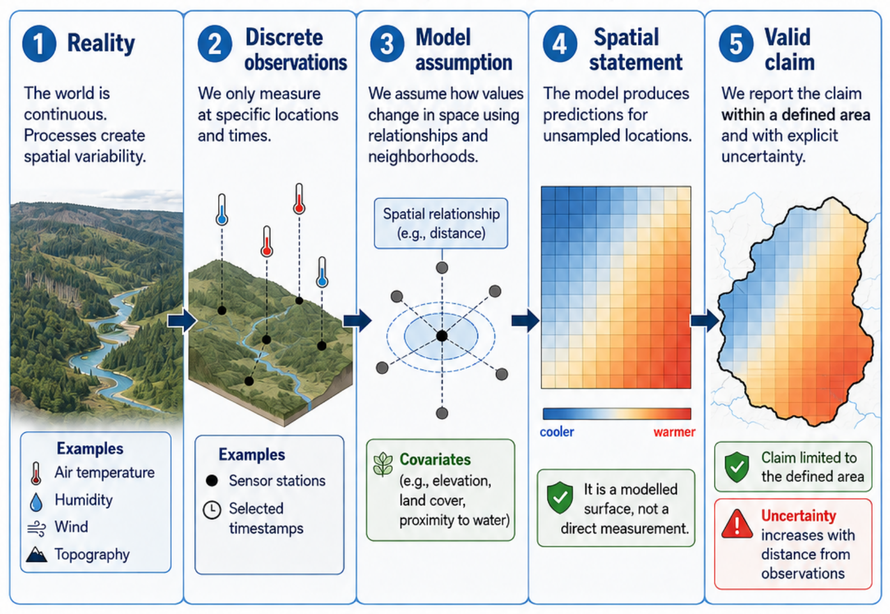
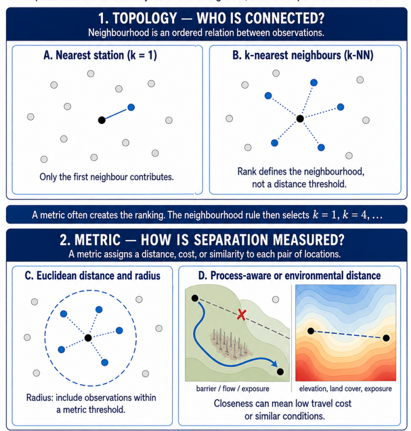
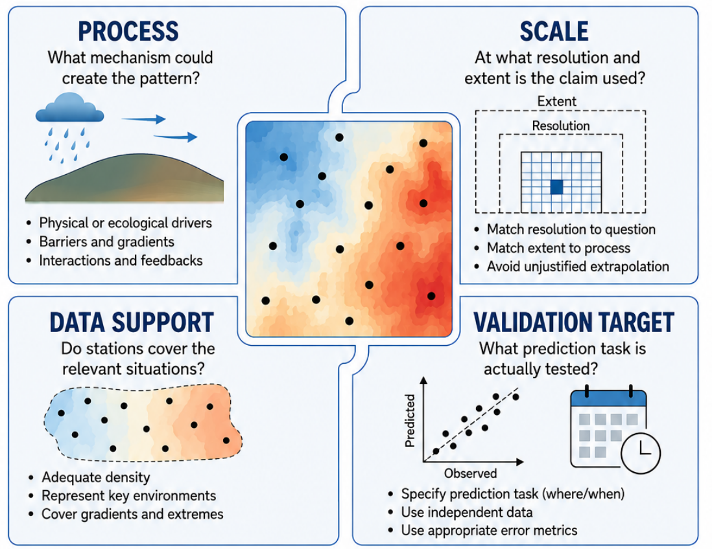
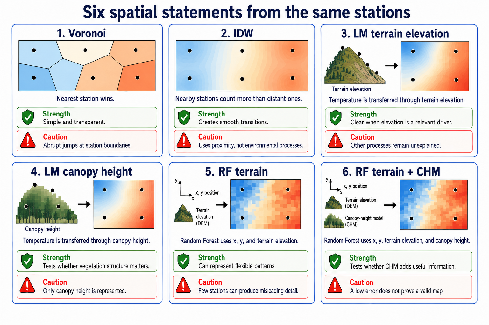
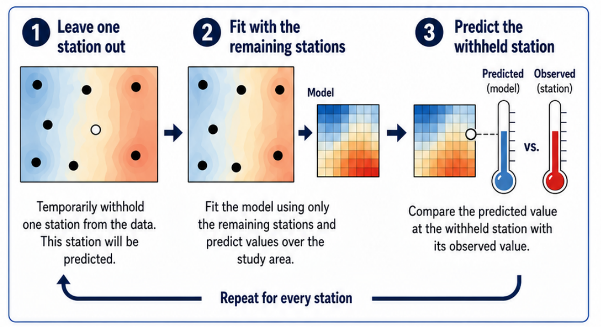

Why this matters
Geoscientific data rarely describe a complete spatial or spatio-temporal continuum. We usually work with discrete observations: measurement locations, pixels, samples, segments, training areas, or selected timestamps. Nevertheless, our questions often concern continuous areas, unobserved locations, and other times.
This is the central problem of the EON warmup:
How can incomplete observations be translated into a defensible spatial statement, and where does that statement stop being supported?
Microclimate makes this problem particularly visible. A small number of sensors observe selected locations and times, while the scientific question concerns a spatially connected and temporally changing field. The same logic occurs in environmental sampling, UAV and LiDAR workflows, segmentation, regression, classification, interpolation, and validation.
Spatial gap filling is therefore not merely a technical operation. It is a modelling step between observation and claim. It requires decisions about neighbourhood, distance, process, scale, model domain, data support, and validation.
The following map shows the project region and measurement situation used in the warmup.

Role and learning goals of this reader
This reader provides the conceptual basis for the two-hour practical. It does not present a catalogue of interpolation algorithms. Instead, it develops a framework for judging whether a spatial result is supported.
After the warmup, you should be able to:
- distinguish an observation, a prediction surface, and a spatial claim;
- distinguish measurement support, sampling scale, process scale, and raster scale;
- explain the transfer assumptions made by Voronoi, IDW, terrain- and canopy-height models, and two Random Forest variants;
- distinguish a model domain from an empirically supported prediction area;
- distinguish geographic support from support in predictor space;
- explain what leave-one-out cross-validation does and does not validate;
- use scale, distance, dissimilarity, and validation error to criticize a map.
The compact workflow is:
reality and process
-> discrete observations with limited support
-> explicit model assumption
-> spatial prediction inside a model domain
-> scale and support diagnostics
-> validation for a specified prediction task
-> bounded spatial claim
Observation locations are points, measurements are not
Sensor locations are represented geometrically as points. The measured values, however, are not truly dimensionless. Every temperature value has a spatial and temporal support determined by factors such as:
- the sensing volume and housing;
- sensor response time and temporal aggregation;
- installation height and exposure;
- ventilation, radiation, and surrounding surfaces;
- the process regime during the selected timestamp.
This distinction matters because modelling changes support. A station measurement is transferred to an unsampled location or raster cell. The raster cell is not a new observation and its size is not the scale at which the original process was observed.
A fine raster grid creates fine display cells. It does not create fine-scale process information.
Neighbourhood and distance: what does “near” mean?
The first modelling decision is the definition of proximity. Proximity is not only a geometric property. It is an operational statement about which observations may inform a prediction location and how strongly they should do so.
Tobler’s First Law of Geography provides a common default: near things are more related than distant things.1 This is a useful starting assumption, not a universal law for every process. Spatial influence has to be operationalized through a distance or similarity measure and a neighbourhood rule.
Spatial relationships have two connected aspects:
- a neighbourhood rule determines which observations contribute;
- a metric determines how separation, cost, or similarity is measured.
For example, a metric may rank all stations by Euclidean distance, while a neighbourhood rule selects only the first or first four stations. Other processes may require flow distance, travel cost, slope position, wind exposure, barriers, or similarity in environmental conditions.

The important question is not whether Euclidean distance is simple. The question is whether it is defensible for the process and scale of the intended claim.
Four meanings of scale
The word scale is often used too loosely. At least four different scales are involved in this exercise.
| Scale | Operational meaning | Warmup example |
|---|---|---|
| Measurement support | What one recorded value represents in space and time | air temperature at one installation and timestamp |
| Sampling scale | Distances and density of the station network | nearest-station and fourth-neighbour distances |
| Process scale | Distance over which the temperature field remains spatially related | structure visible in an empirical variogram |
| Representation scale | Grain and extent of the output | DEM/CHM cell size and model domain |
These scales are related but not interchangeable. A 1 m output grid can be calculated from stations spaced 100 m apart. The resulting file has a 1 m grain, but the evidence does not resolve temperature variation at 1 m.
Similarly, the extent of a map says where values were calculated, not where they are equally reliable.
Scale consistency
A spatial statement becomes questionable when:
- the output grain suggests detail far below the sampling or process scale;
- the mapped extent exceeds the environments or distances represented by the observations;
- the covariates are used at a scale unrelated to the response process;
- validation removes points under much easier conditions than those encountered in the final map.
The original, larger workflow estimated empirical correlation scales and tuned covariates across several smoothing radii. The two-hour warmup does not reproduce that complete optimization. It retains the essential diagnostic question:
Are the raster grain, station spacing, identifiable process scale, and intended claim mutually consistent?
Process regimes and temporal validity
Microclimate is dynamic. The controls on a temperature field can change between daytime heating, evening transition, nocturnal cooling, cold-air drainage, and early-morning inversion.
Therefore, a model fitted to one timestamp does not automatically describe a general microclimate pattern. It describes one observed state under one process regime.
The warmup deliberately uses one timestamp first. It selects 1 September 2026 at 14:00 CEST, the hour with the largest temperature contrast among the eight stations in the available record. This keeps all six model assumptions comparable because every method receives the same response values. The resulting validity is correspondingly narrow:
validity for the selected timestamp
!= validity for every time of day
!= validity for every weather situationAt the end of the exercise, changing the selected temperature column provides a compact process check. If model ranking, spatial structure, or identifiable scale changes, the earlier result was regime-specific rather than universal.
Process, scale, data support, and validation target
A defensible map requires more than a plausible algorithm. Four questions must be answered together.

Process
What mechanism could generate the pattern? Possible controls include elevation, terrain form, radiation, vegetation, cold-air drainage, surface cover, and wind exposure. A model does not become process-aware merely because it produces a smooth surface.
Scale
At what grain and extent will the result be used? Does the station network resolve the relevant process scale? Are covariates represented at a scale that matches the response?
Data support
Do the observations represent the relevant distances, elevations, environments, gradients, and extremes? Dense sampling in one environmental situation does not compensate for missing other situations.
Validation target
Which prediction task is tested: another station in the existing network, an unsampled spatial block, a new time, or a genuinely independent campaign? Validation results apply only to the task represented by the validation design.
Independent data would provide the strongest test. The warmup has no independent reference surface. Its leave-one-out procedure is therefore an internal diagnostic, not independent validation.
Model domain is not an area of validity
The practical needs a finite region in which raster predictions are calculated. It uses the convex hull of the stations plus a small buffer. This region is the model and reporting domain.
It prevents unlimited mapping across the full DEM and CHM, but it does not prove validity. Even inside the convex hull, a location can be poorly supported because it is:
- far from all stations;
- surrounded by stations only in one direction;
- outside the observed elevation or environmental distribution;
- affected by a process not represented by the model;
- predicted under conditions unlike those tested during cross-validation.
The reporting domain answers:
Where do we calculate and display predictions?
Support diagnostics answer:
Where are these predictions comparable to situations represented by the observations and validation?
These questions must not be collapsed into one polygon.
Six transfer assumptions
All six warmup models use the same eight measured station temperatures as the response to be transferred into space. They differ in the transfer rule and in the environmental information supplied to the model.
| Model | Transfer rule | Information used |
|---|---|---|
| Voronoi | assign the nearest measured value | position and first neighbour |
| IDW | combine nearby values using distance weights | position, distance, and four neighbours |
| LM terrain elevation | apply one fitted temperature-terrain relationship | terrain elevation from the DEM |
| LM canopy height | apply one fitted temperature-canopy relationship | canopy height from the CHM |
| RF terrain | learn flexible partitions from the observed sample | coordinates and terrain elevation |
| RF terrain + CHM | add canopy structure to the same RF formulation | coordinates, terrain elevation, and canopy height |

Voronoi / nearest station
Voronoi assigns the measured value of the nearest station. The resulting field is piecewise constant and contains hard station-control zones.
Its strength is transparency: it does not invent a continuous gradient. Its limitation is equally transparent: an observation can be transferred over a long distance, and the method does not know whether a barrier, elevation change, or different surface lies between station and prediction location.
For this model, distance to the nearest training station, (d_1), completely describes the geometric transfer distance used by the algorithm.
IDW / distance decay
IDW combines station measurements using weights that decrease with distance. In the warmup, the four nearest stations contribute and inverse squared distance is used.
The method assumes isotropic and gradual spatial decay. It does not know wind, shade, cold-air drainage, land cover, or exposure unless their effects happen to be represented by the station values and geometry.
For IDW, nearest distance alone is insufficient. The result also depends on the other selected neighbours and the concentration of their weights. The first- and fourth-neighbour distances, (d_1) and (d_4), provide a compact first support diagnostic, but not a complete interpolation uncertainty model.
Linear models / alternative process hypotheses
The first linear model estimates one terrain-elevation relationship:
\[ T = \beta_0 + \beta_1\,z + \varepsilon, \]
where (z) is terrain elevation. Its predicted field inherits the geometry of the DEM, but the fitted information remains one global elevation relationship estimated from eight stations.
The second linear model has the same mathematical form but replaces terrain elevation with canopy height:
\[ T = \beta_0 + \beta_1\,h + \varepsilon, \]
where (h) is canopy height calculated as DSM minus DEM. Comparing the two linear models isolates the substantive choice of environmental predictor: similar terrain elevation and similar canopy height are different hypotheses about why two locations should have similar temperatures.
The fine structure of either raster must not be confused with equally fine temperature evidence. A familiar predictor value may also occur far from any station. Geographic support and predictor-space support are therefore separate diagnostics.
Random Forest / adding predictors within one algorithm
The first Random Forest uses coordinates and terrain elevation. The second uses the same inputs and additionally receives canopy height. This paired comparison asks whether CHM contributes useful information within the same flexible algorithm.
Both models can combine the predictors into local decision rules and produce a detailed-looking field from few observations. Coordinates can act as spatial proxies and allow the model to reproduce the layout of this particular network without necessarily learning transferable microclimatic processes.
A low internal error does not prove that the mapped pattern is process-valid. Predictor-space support, spatial validation distance, and the meaning of the coordinate predictors must be inspected separately.
Three layers of validity diagnostics
The warmup separates three questions that are often incorrectly combined.
1. Process and scale support
An empirical variogram summarizes how dissimilarity between observations changes with distance. It can indicate whether a characteristic spatial correlation scale is visible in the sampled field.
The variogram is a diagnostic, not an automatic truth machine. With few stations, clustered sampling, or weak structure, a stable range may not be identifiable. “The process scale cannot be identified from this network” is a valid scientific result.
The practical compares:
- raster grain;
- distribution of station spacing;
- empirical semivariance across distance;
- intended scale of interpretation.
2. Geographic support
For every prediction cell, distances to the observed stations can be calculated. These continuous distance fields show how far measurements are transferred.
The same distances are calculated for withheld stations during cross-validation. This connects the map to the validation task:
A global CV error is most defensible where prediction distances resemble those represented during CV.
For the warmup:
- (d_1) is the primary support measure for Voronoi;
- (d_1) and (d_4) are initial support measures for four-neighbour IDW;
- geographic distance remains informative for LM and RF, even though they use covariates.
3. Predictor-space support
Regression and machine-learning models may be geographically close to observations but encounter unfamiliar combinations of predictors. The Dissimilarity Index (DI) measures how different a prediction location is from the training data in predictor space.2
The DI is continuous:
small DI -> conditions similar to the training data
large DI -> increasingly unfamiliar predictor conditionsAn Area of Applicability (AOA) is obtained by applying a threshold to the DI. The threshold is tied to the cross-validation design and marks the area in which the reported CV performance is expected to be applicable. The AOA is therefore not a generic confidence map and not a substitute for process knowledge.
The optional CAST add-on illustrates DI and AOA for the LM canopy-height model only. It uses canopy height because this is the sole predictor in that model. A support diagnostic must use exactly the predictor(s) of the model it describes.
Voronoi and IDW transfer measurements through geographic distance, not an environmental predictor space. Applying this predictor-space AOA to them would answer the wrong support question.
Validation: what is actually checked?
Leave-one-out cross-validation removes one station, refits the model using all remaining stations, and predicts the withheld value. Repeating this for all stations produces one prediction error per station.

MAE summarizes the average absolute magnitude of these errors:
\[ MAE = \frac{1}{n}\sum_{i=1}^{n}|\hat{y}_i-y_i|. \]
RMSE gives additional weight to individual large errors:
\[ RMSE = \sqrt{\frac{1}{n}\sum_{i=1}^{n}(\hat{y}_i-y_i)^2}. \]
Lower MAE and RMSE values mean that withheld station values were predicted more closely in this particular internal test. A substantially larger RMSE than MAE indicates that one or more stations have particularly large errors. Neither measure proves that the full surface is correct.
LOOCV in this warmup tests:
Prediction of another station from the remaining stations under the distances, predictor values, timestamp, and network geometry represented in the dataset.
It does not test:
- an independent measurement campaign;
- every raster cell between stations;
- spatial structures below the sampling scale;
- a new temporal process regime;
- missing environmental situations;
- whether a visually plausible gradient represents the true mechanism.
Spatial dependence can make ordinary resampling optimistic when training and test observations remain close. More demanding tasks require spatially separated folds or distance-matched cross-validation.3 These approaches belong to the larger workflow; the warmup introduces the reason they are needed.
From a global error to local interpretability
A single RMSE is a global summary. Prediction conditions vary across the map. The warmup therefore reads error together with support.
| Diagnostic | Question answered |
|---|---|
| MAE | What was the typical absolute error at a withheld station? |
| RMSE | Were withheld stations predicted closely when large errors receive additional weight? |
| empirical variogram | Is a spatial process scale identifiable from the observations? |
| (d_1), (d_4) | How far are measurements transferred locally? |
| DI | How unfamiliar are the predictor conditions? |
| AOA | Where is the CV performance considered transferable under the chosen threshold? |
A high DI or unusual prediction distance does not automatically prove that a prediction is wrong. It shows that the available validation result has weak empirical support there.
DI/AOA add-on
The optional add-on maps DI and AOA for the LM canopy-height model without changing any of the six prediction models. Low DI means canopy-height conditions similar to the stations. AOA identifies where the LOOCV performance of this specific model is considered transferable.
Hands-on workflow
The practical script implements a deliberately compact chain:
- load the prepared hourly station data, DEM, and DSM;
- calculate canopy height as DSM minus DEM;
- select 1 September 2026 at 14:00 CEST;
- align coordinate systems and extract terrain and canopy height at the stations;
- define a model and reporting domain around the eight stations;
- calculate six alternative spatial statements;
- perform leave-one-out cross-validation and calculate MAE and RMSE;
- compare DEM-only and DEM-plus-CHM formulations within LM and RF;
- optionally map DI and AOA for the LM canopy-height model;
- read error, process assumptions, geographic support, and predictor support together.
The script is not a complete microclimate model. It is a controlled comparison of transfer assumptions and their validity boundaries.
Model-specific interpretation matrix
| Model | What creates the field? | Primary support diagnostic | Main missing information |
|---|---|---|---|
| Voronoi | nearest measured value | (d_1) relative to CV distances | barriers and environmental differences |
| IDW | four distance-weighted values | (d_1), (d_4), and weight concentration | process direction and covariates |
| LM terrain elevation | global terrain-elevation relationship | geographic distance | non-terrain processes and local residual structure |
| LM canopy height | global canopy-height relationship | CHM DI/AOA add-on plus geographic distance | non-canopy processes and local residual structure |
| RF terrain | partitions in coordinate-terrain space | geographic distance | process interpretation and independent transfer evidence |
| RF terrain + CHM | partitions in coordinate-terrain-CHM space | geographic distance | support for fine canopy structure and independent transfer evidence |
No diagnostic makes a model universally valid. Each diagnostic exposes a specific boundary of the spatial claim.
Questions for reading the results
For every model, ask:
- Which measured values are transferred into unsampled space?
- Which rule performs the transfer?
- What spatial and temporal support does one observation have?
- Is the raster grain finer than the information actually resolved?
- Is a process scale identifiable from the station network?
- Are local prediction distances represented during cross-validation?
- Are terrain elevation, canopy height, and their predictor combinations represented by the stations?
- Which process could explain the pattern, and which process is missing?
- What exact prediction task did LOOCV test?
- Would the statement still be defensible at another timestamp?
The objective is not to select the most attractive map. It is to state where and for what task each map is supported.
Reality check: prepared data are not raw data
Prepared data allow the session to focus on spatial modelling. Real projects require additional checks before any interpolation or prediction:
- sensor plausibility and calibration;
- timestamp and time-zone consistency;
- missing values and data provenance;
- coordinate reference systems and DEM/DSM alignment;
- installation height and station exposure;
- temporal aggregation and weather regime;
- sampling design and environmental coverage;
- independent or spatially appropriate validation data.
These steps are not replaced by an AOA, small MAE or RMSE values, or a visually convincing surface.
Core message
A map from point measurements is not an automatic output. It is a modelled spatial statement whose validity is conditional.
The correct question is not simply:
Which method has the smallest MAE or RMSE?The correct questions are:
Which process and scale are represented?
Where is the prediction geographically supported?
Where are predictor conditions represented?
Which prediction task was validated?
For which timestamp and process regime does the claim apply?A simple method can be the scientifically stronger choice when it exposes its assumptions and limitations. A complex method is defensible only when its additional structure is supported by observations, process knowledge, scale consistency, and an appropriate validation design.
Footnotes
Tobler, W. R. (1970). A computer movie simulating urban growth in the Detroit region. Economic Geography, 46(Supplement), 234–240. https://doi.org/10.2307/143141↩︎
Meyer, H., & Pebesma, E. (2021). Predicting into unknown space? Estimating the area of applicability of spatial prediction models. Methods in Ecology and Evolution, 12, 1620–1633. https://doi.org/10.1111/2041-210X.13650↩︎
Milà, C., Mateu, J., Pebesma, E., & Meyer, H. (2022). Nearest neighbour distance matching leave-one-out cross-validation for map validation. Methods in Ecology and Evolution, 13, 1304–1316. https://doi.org/10.1111/2041-210X.13851↩︎